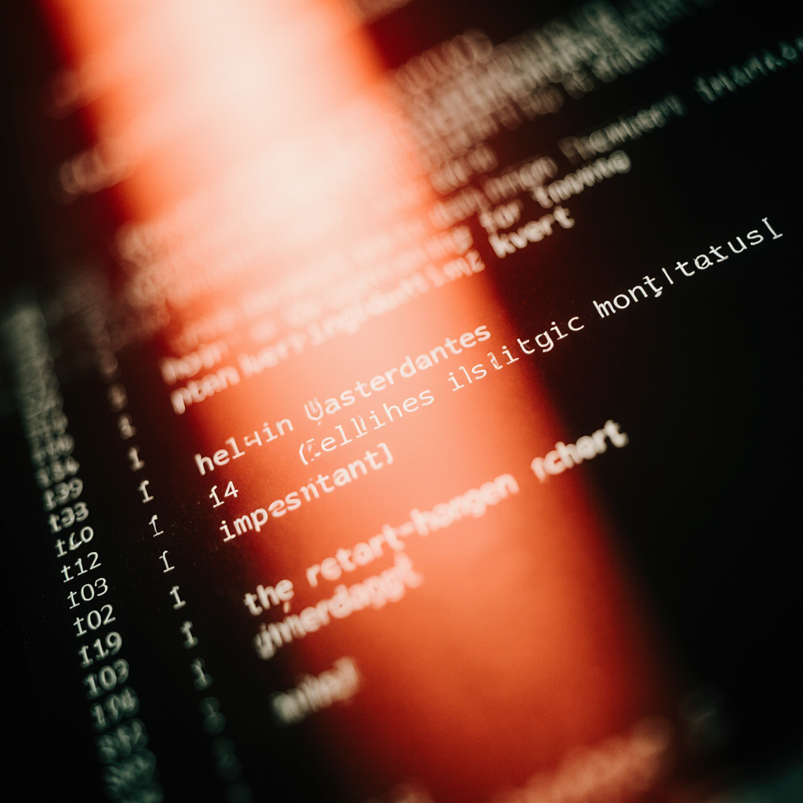

KIRMIZI TAKIM
Saldırgan Gibi Düşünerek Açık
Arama
- - Red Team, kurumun belirlediği izinli kapsam içinde tamamen gerçekçi saldırı senaryoları oluşturarak adeta profesyonel bir hacker gibi davranır. Bu süreçte amaç sadece zafiyet bulmak değil, aynı zamanda gerçek dünyada yaşanabilecek saldırıların bire bir simülasyonunu yapmaktır.
- - Ekip, sosyal mühendislik teknikleri kullanarak çalışanlara phishing e-postaları gönderir ve bu e-postalara verilen tepkileri dikkatlice inceler. Böylece kurumun çalışanlarının ne kadar kandırılabilir olduğunu ve insan kaynaklı açıkların hangi seviyede bulunduğunu analiz eder.
- - Ağ yapısına, yazılımlara ve iç sistemlere çeşitli sızma girişimleri gerçekleştirerek teknik zafiyetleri tespit etmeye çalışır. Bu denemelerde siber saldırganların kullandığı araçlar ve yöntemler tercih edilir, böylece zafiyetlerin gerçek tehdide ne kadar açık olduğu net şekilde görülür.
- - Sisteme giriş sağladıktan sonra yetki yükseltme, hassas veri erişimi veya yatay hareket gibi adımları deneyerek içeride ne kadar ilerleyebileceğini ölçer. Bu aşama, saldırganın güvenlik katmanlarını nasıl aşabileceğini ortaya koyar ve savunmanın derinliği test edilir.
- - Elde edilen verilere erişip dışarı çıkarma simülasyonları yaparak kurumun veri güvenliği dayanıklılığını değerlendirir. Tüm bu adımların amacı zarar vermek değil; kurumun gerçek bir saldırganla karşılaştığında ne kadar dayanabileceğini önceden tespit edip savunmayı güçlendirmektir.

Gerçeğe En Yakın Saldırı Testleri
Gerçeğe En Yakın Saldırı Testleri
Yapma
- - Kırmızı takım, saldırı süreci boyunca karşılaştığı tüm açıkları ve yaptığı her adımı sistematik bir şekilde kaydeder.Bu kayıtlar hem testin bilimsel ilerleyişini gösterir hem de zafiyetlerin anlaşılmasını kolaylaştırır.
- - Hazırlanan raporlarda hangi zafiyetin nasıl bulunduğu, hangi araçların kullanıldığı ve saldırı zincirinin nasıl ilerlediği detaylı şekilde açıklanır.Bu sayede rapor, sadece sonuç değil tüm süreç hakkında bilgi verir.
- - Mavi takımın saldırıyı daha iyi anlayabilmesi için raporlar genellikle olay sırasına göre düzenlenir. Böylece güvenlik ekibi saldırının başlangıcından sonuna kadar tümaşamaları kronolojik olarak görür ve saldırgan mantığının nasıl işlediğini kavrar.
- - Raporlarda ekran görüntüleri, komut çıktıları ve diğer teknik kanıtlar yer alır; bu kanıtlar tespit edilen zafiyetlerin gerçekten nasıl çalıştığını somut şekilde ispatlar.Böylece rapor hem güvenilir hem de doğrulanabilir olur.
- - Her rapor, teknik kanıtların yanında çözüm önerileri ve düzeltme yöntemleri de içerir. Bu öneriler sayesinde mavi takım sadece “ne oldu?”yu değil “nasıl düzeltilir?”i de görebilir vehataların tekrarlanmaması için somut adımlar atabilir.
Bulunan Açıkları Detaylı Şekilde Raporlama
- - Test süreci tamamlandıktan sonra Red Team, kurumun savunmasını güçlendirmek amacıyla kapsamlı öneriler sunar. Bu öneriler, testlerde tespit edilen zafiyetlerin türüneve önem derecesine göre hazırlanır.
- - Teknik öneriler genellikle sistem güncellemeleri, güvenlik yamalarının uygulanması, hatalı yapılandırmaların düzeltilmesi veya gereksiz servislerin kapatılması gibi çözüm yollarını içerir.Bu adımlar teknik zafiyetleri ortadan kaldırmayı hedefler.
- - Bazı durumlarda Red Team, çalışanların farkındalığını artırmak için eğitim verilmesi, sosyal mühendislik saldırılarına karşı politikaların güncellenmesi gibi insan odaklı önerilerde bulunur.Böylece hem teknik hem insan kaynaklı açıklar birlikte ele alınır.
- - Kurum içi güvenlik politikalarının gözden geçirilmesi, parola standartlarının artırılması, erişim yetkilerinin düzenlenmesi gibi yapısal öneriler de rapora eklenebilir. Bu öneriler, kurumun uzunvadeli güvenlik kültürünü güçlendirir.
- - Tüm önerilerin temel amacı, bir sonraki saldırı denemesinde aynı açıkların tekrar kullanılmasını engelleyerek kurumun genel siber güvenliğini yükseltmektir. Böylece Red Team çalışması sadece zafiyet bulmakla kalmaz; kurumun sürekli olarak gelişmesini sağlayan bir rehber niteliği taşır.
Güvenliği Güçlendirmek İçin Öneriler Sunma
- - Testler tamamlandıktan sonra Red Team, kurumun mevcut savunma yapısını güçlendirebilmesi için detaylı öneriler listesi hazırlar. Bu öneriler, saldırı sırasında ortaya çıkan zayıf noktaların analizine dayanır ve kurumun güvenlik seviyesini artırmayı hedefler.
- - eknik öneriler genellikle sistem güncellemelerinin yapılması, eksik yamaların uygulanması, yanlış yapılandırmaların düzeltilmesi veya gereksiz servislerin kapatılması gibi somut adımları içerir. Böylece teknik altyapıdaki açıklar hızlı bir şekilde kapatılabilir.
- - Red Team, sadece teknik noktaları değil insan kaynaklı riskleri de değerlendirir ve personelin sosyal mühendislik saldırılarına karşı eğitilmesini önerir. Bu eğitimler çalışanların daha bilinçli davranmasını sağlar ve insan hatasından kaynaklanan zafiyetleri azaltır.
- - Ayrıca kurum içi politika ve prosedürlerin güncellenmesi gerektiğini belirterek güvenlik kurallarının daha net, uygulanabilir ve sıkı hâle getirilmesini önerir. Bu, hem çalışan davranışlarını hem de erişim süreçlerini daha güvenli bir yapıya kavuşturur.
- - Tüm bu önerilerin temel amacı, bir sonraki saldırı denemesinde aynı açıkların yeniden kullanılmasını engelleyerek kurumun genel siber güvenlik seviyesini yükseltmektir. Böylece Red Team çalışmaları sadece bir test olmaktan çıkar, kurumun uzun vadeli güvenlik stratejisinin önemli bir parçası hâline gelir.